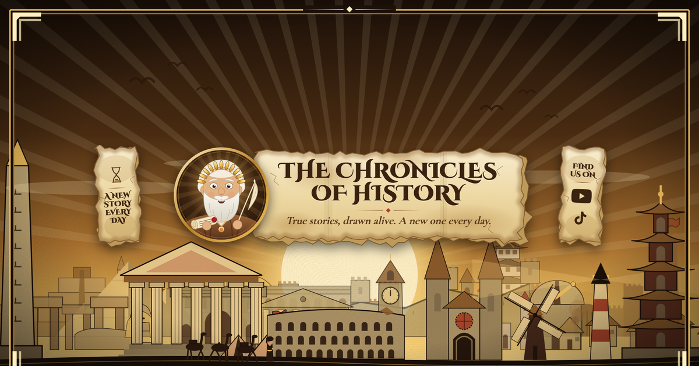

True stories, drawn alive
Short vertical videos that tell one real story from history in just over a minute: narrated, hand-drawn and sourced. A new story every day on YouTube and TikTok.
Latest stories
One video per era, one series per kind of story: a day in the life, a turning point, an unsolved mystery, a journey, a life in dates.


How a story is made
One person and a pipeline of software, with a person approving the result.
A format and a topic, balanced by what viewers actually watch to the end.
An AI-drafted script that must pass strict checks: story first, people in the pictures, 150–190 words.
A second pass verifies dates, names, figures and quotes and rewrites what is wrong.
A synthetic voice reads the script; subtitles follow every word.
Remotion paints each scene with a cast of 127 historical characters, 25 animals and 71 structures.
A technical gate checks length, format and sound before it is scheduled.
Eleven eras, seven colour styles
Each video is drawn in the look of its time (typefaces, frames, anachronisms removed) and dressed in one of seven warm brown-and-gold colour themes.
Colour themes
Questions
Is it AI?
The scripts are drafted with AI language models and then checked by an automated fact-check pass; the owner picks the format. The narration is a synthetic voice and the pictures are drawn by code. Nothing is filmed and no archive footage is used.
Are the stories true?
Facts come first: every date, name and figure must be real and well documented, and where historians disagree the video says so. Mistakes can still happen. If you spot one, tell us and we will correct or remove the video.
Why are the videos just over a minute?
Every video runs between 62 and 90 seconds: long enough to tell a story with a beginning, a turn and an ending, short enough to watch in one go.
Where are the maps from?
Maps are drawn from real coastlines (Natural Earth, public domain) in the style of an old treasure map, with the real positions of the places in the story.
Do you collect data about me?
No. This site has no cookies, no analytics and no third-party files. See the Privacy Policy.